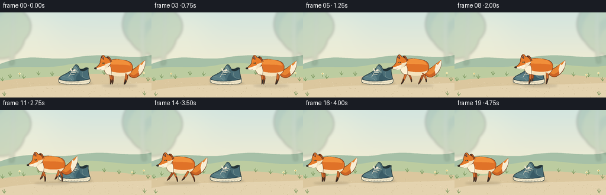
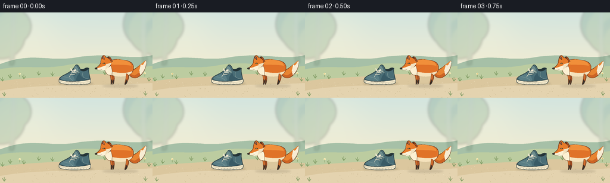
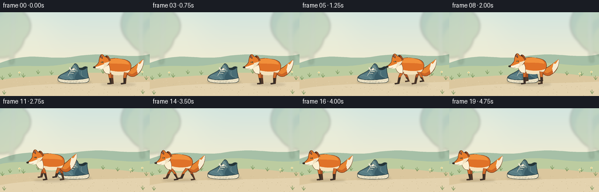
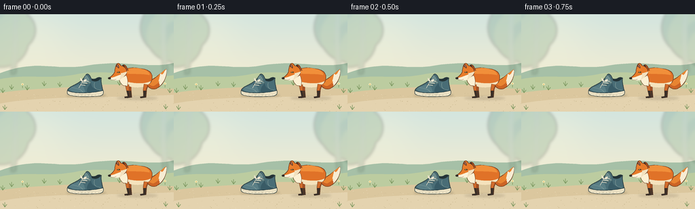

CODING AGENTS AS PIXEL WORLD MODELS
traex/GPT-6.1-Sol · dynamic_spatial_relationship_0029
点击播放 · 原生 RGB 像素
逐轮保存的候选
回放视频、检查图与代码变化。
每份候选均可单独播放。实际图片检查记录在下方工具轨迹中。
候选 01播放与检查图
点击播放 · 原生 RGB 像素


展开代码变化
--- 上一保存版本
+++ 本次保存版本
@@ -0,0 +1,154 @@
+from pathlib import Path
+import math
+import numpy as np
+from PIL import Image, ImageDraw, ImageFilter
+import artifact_io
+
+W,H,S=256,144,4
+
+def bezier(points, n=22):
+ p=np.array(points,dtype=float)
+ return [tuple(sum(math.comb(len(p)-1,j)*(1-t)**(len(p)-1-j)*t**j*p[j] for j in range(len(p)))) for t in np.linspace(0,1,n)]
+
+class Canvas:
+ def __init__(self, im): self.im=im;self.d=ImageDraw.Draw(im)
+ def polygon(self, pts, fill): self.d.polygon([(round(x*S),round(y*S)) for x,y in pts],fill=fill)
+ def line(self,pts,fill,width=1): self.d.line([(round(x*S),round(y*S)) for x,y in pts],fill=fill,width=max(1,round(width*S)),joint='curve')
+ def ellipse(self,box,fill,outline=None,width=1): self.d.ellipse(tuple(round(v*S) for v in box),fill=fill,outline=outline,width=round(width*S))
+ def path(self,segs,fill,outline=None,width=.7):
+ pts=[]
+ for seg in segs: pts+=bezier(seg) if len(seg)>2 else seg
+ self.polygon(pts,fill)
+ if outline:self.line(pts+[pts[0]],outline,width)
+ return pts
+
+def background():
+ yy,xx=np.mgrid[:H*S,:W*S]; y=yy/S;x=xx/S
+ base=np.zeros((H*S,W*S,3),dtype=float)
+ sky1=np.array([211,229,223]);sky2=np.array([242,236,210])
+ a=np.clip(y/97,0,1)[...,None];base=sky1*(1-a)+sky2*a
+ # Soft glow from the upper left.
+ glow=np.exp(-((x-49)**2+(y-34)**2)/2600)[...,None]
+ base=base*(1-.25*glow)+np.array([255,249,219])*.25*glow
+ im=Image.fromarray(np.uint8(base));c=Canvas(im)
+ # Woodland silhouettes and rounded rolling meadow.
+ c.path([[(0,87),(52,67),(76,82),(121,77)],[(121,77),(185,65),(214,82),(256,72)],[(256,72),(256,144)],[(256,144),(0,144)],[(0,144),(0,87)]],(166,192,167))
+ c.path([[(0,96),(39,87),(71,98),(116,88)],[(116,88),(164,80),(214,97),(256,90)],[(256,90),(256,144)],[(256,144),(0,144)],[(0,144),(0,96)]],(188,204,160))
+ layer=Image.new('RGBA',im.size);t=Canvas(layer)
+ for tx,ty,r in [(-7,28,39),(14,13,28),(246,20,39),(269,40,33)]:
+ t.ellipse((tx-r,ty-r,tx+r,ty+r),(117,156,136,85))
+ t.ellipse((tx-r+9,ty-r+10,tx+r+10,ty+r+11),(148,178,144,90))
+ t.path([[(19,0),(21,40),(16,89)],[(16,89),(23,88)],[(23,88),(26,43),(26,0)],[(26,0),(19,0)]],(124,153,130,66))
+ t.path([[(239,0),(234,44),(241,86)],[(241,86),(247,85)],[(247,85),(242,42),(245,0)],[(245,0),(239,0)]],(129,159,135,62))
+ im=Image.alpha_composite(im.convert('RGBA'),layer.filter(ImageFilter.GaussianBlur(2.2*S))).convert('RGB');c=Canvas(im)
+ c.path([[(0,116),(55,108),(113,109),(153,104)],[(153,104),(202,103),(237,112),(256,110)],[(256,110),(256,144)],[(256,144),(0,144)],[(0,144),(0,116)]],(219,199,158))
+ c.path([[(0,132),(62,120),(158,124),(256,119)],[(256,119),(256,144)],[(256,144),(0,144)],[(0,144),(0,132)]],(228,211,175))
+ rng=np.random.default_rng(15)
+ for _ in range(155):
+ x=float(rng.uniform(0,256));y=float(rng.uniform(116,144));r=float(rng.uniform(.15,.6))
+ c.ellipse((x-r,y-r*.5,x+r,y+r*.5),tuple(int(i) for i in rng.choice(np.array([[199,181,140],[235,221,188],[206,190,151]]))))
+ # A sparse fringe keeps the action area uncluttered.
+ for x,y in [(4,116),(17,111),(40,112),(65,106),(88,107),(176,105),(201,108),(226,109),(250,116),(7,141),(244,140)]:
+ for dx,dy in [(-3,-5),(0,-7),(3,-4)]:c.line([(x,y),(x+dx,y+dy)],(123,151,95),.8)
+ for x,y in [(33,104),(223,106),(243,103)]:
+ c.line([(x,y+5),(x,y-2)],(128,151,95),.65)
+ c.ellipse((x-1.7,y-2,x+1.7,y+1),(250,241,191));c.ellipse((x-.6,y-1,x+.6,y+.2),(208,160,73))
+ return im
+
+def shadow(im,x,y,rx,ry,alpha=40):
+ layer=Image.new('RGBA',im.size);c=Canvas(layer)
+ c.ellipse((x-rx,y-ry,x+rx,y+ry),(76,62,40,alpha))
+ layer=layer.filter(ImageFilter.GaussianBlur(1.5*S))
+ return Image.alpha_composite(im.convert('RGBA'),layer).convert('RGB')
+
+def shoe(im):
+ im=shadow(im,127,120,29,3,47);c=Canvas(im)
+ outline=(48,64,66)
+ # Pale rubber welt, rounded toe and raised heel.
+ c.path([[(99,113),(100,108),(107,106),(114,105)],[(114,105),(133,103),(145,105),(151,111)],[(151,111),(154,116),(152,120),(146,121)],[(146,121),(116,123),(101,121),(99,117)],[(99,117),(99,113)]],(241,230,200),outline,.8)
+ c.path([[(100,113),(99,108),(110,105),(117,100)],[(117,100),(122,97),(124,93),(127,89)],[(127,89),(129,87),(132,89),(134,95)],[(134,95),(142,98),(143,91),(149,94)],[(149,94),(148,102),(151,108),(151,113)],[(151,113),(136,117),(108,118),(100,113)]],(73,109,118),outline,.9)
+ c.path([[(135,95),(140,98),(144,91),(149,94)],[(149,94),(146,98),(142,101),(135,98)],[(135,98),(135,95)]],(35,51,54),outline,.6)
+ c.path([[(126,90),(130,89),(132,97),(134,102)],[(134,102),(126,104),(120,103)],[(120,103),(123,96),(126,90)]],(110,141,141),(56,81,84),.5)
+ c.path([[(102,111),(103,107),(110,107),(117,103)],[(117,103),(121,104),(125,109),(125,115)],[(125,115),(115,116),(107,116),(102,111)]],(90,126,133))
+ c.path([[(134,102),(135,107),(136,110),(147,112)],[(147,112),(147,114),(137,116),(128,115)],[(128,115),(127,109),(132,104),(134,102)]],(57,91,102))
+ # Sewn panels, laces and heel seam.
+ c.line(bezier([(106,108),(120,111),(119,112),(122,115)]),(148,171,166),.45)
+ c.line(bezier([(139,101),(137,110),(142,111),(148,112)]),(146,168,162),.5)
+ for x,y in [(123,98),(121,101),(118,104)]:
+ c.ellipse((x-.9,y-.7,x+.7,y+.7),(35,62,69));c.ellipse((x+7,y+.1,x+8.7,y+1.5),(35,62,69))
+ c.line([(x,y),(x+8,y+1)],(245,235,208),1.1)
+ c.path([[(122,99),(119,93),(117,93),(119,98)],[(119,98),(122,100)]],(239,230,208),(233,224,201),.55)
+ c.path([[(122,99),(127,94),(129,96),(125,100)],[(125,100),(122,99)]],(239,230,208),(233,224,201),.55)
+ c.line([(121,100),(116,109)],(235,226,203),.7)
+ c.line(bezier([(101,116),(116,120),(137,119),(151,116)]),(173,165,142),.6)
+ for x in range(105,148,5):c.line([(x,120),(x+1,118.9)],(171,163,141),.5)
+ return im
+
+def fox(im,x,phase,running):
+ bob=-1.6*(.5+.5*math.cos(phase*2)) if running else 0
+ cy=102+bob
+ im=shadow(im,x,124,30,2.6,38)
+ c=Canvas(im);edge=(107,56,29)
+ def P(pts):return [(x+a,cy+b) for a,b in pts]
+ def path(segs,fill,out=None,w=.65):return c.path([P(seg) for seg in segs],fill,out,w)
+ def line(pts,col,w=.7):c.line(P(pts),col,w)
+ def ell(box,col,out=None,w=.5):c.ellipse((x+box[0],cy+box[1],x+box[2],cy+box[3]),col,out,w)
+ # Legs are jointed and alternate between reaching and pushing off.
+ def leg(hip,front,offset,back=False):
+ a=math.sin(phase+offset) if running else 0
+ b=math.cos(phase+offset) if running else 0
+ hx,hy=hip
+ knee=(hx+(7*a if running else (1 if front else -2)),hy+8)
+ foot=(hx+(12*a if running else (2 if front else -3)),22-bob-(max(0,b)*5 if running else 0))
+ coords=[(hx-2.8,hy),(hx+2.8,hy+1),(knee[0]+2,knee[1]),(foot[0]+2,foot[1]-1),(foot[0]-5,foot[1]),(foot[0]-5.5,foot[1]-2.2),(foot[0]-.8,foot[1]-3),(knee[0]-2,knee[1]),(hx-2.8,hy)]
+ path([coords],(171,81,35) if back else (209,108,44),edge,.6)
+ path([[(knee[0]-1.8,knee[1]+2),(knee[0]+1.7,knee[1]+2),(foot[0]+2,foot[1]-1),(foot[0]-5,foot[1]),(foot[0]-5.5,foot[1]-2.2),(foot[0]-.8,foot[1]-3),(knee[0]-1.8,knee[1]+2)]],(57,47,40) if not back else (72,55,43))
+ leg((-12,1),True,math.pi,True);leg((14,1),False,0,True)
+ wag=2*math.sin(phase*.75) if running else .8*math.sin(phase)
+ # Thick, upward-curving brush tail with a large ivory tip.
+ tail=[[(14,-4),(24,-3),(31,-13+wag),(43,-21+wag)],[(43,-21+wag),(44,-9+wag),(39,2),(28,8)],[(28,8),(22,10),(17,7),(14,2)],[(14,2),(14,-4)]]
+ path(tail,(204,100,37),edge,.75)
+ path([[(16,-3),(25,-2),(33,-16+wag),(43,-21+wag)],[(43,-21+wag),(39,-8+wag),(31,1),(24,4)],[(24,4),(18,4),(16,-3)]],(232,132,49))
+ path([[(34,-14+wag),(36,-15+wag),(35,-11+wag),(38,-14+wag)],[(38,-14+wag),(39,-14+wag),(40,-18+wag),(43,-21+wag)],[(43,-21+wag),(44,-11+wag),(39,-1),(33,4)],[(33,4),(34,0),(31,1),(33,-3)],[(33,-3),(30,-1),(33,-7+wag),(34,-14+wag)]],(247,236,211))
+ # Long orange torso, shoulder and white belly.
+ path([[(-24,-8),(-26,-21),(-12,-25),(3,-22)],[(3,-22),(18,-21),(23,-15),(22,-7)],[(22,-7),(21,4),(6,7),(-8,5)],[(-8,5),(-18,5),(-23,0),(-24,-8)]],(224,114,40),edge,.85)
+ path([[(-21,-15),(-17,-23),(-3,-25),(11,-20)],[(11,-20),(16,-18),(19,-14),(18,-12)],[(18,-12),(6,-15),(-12,-13),(-21,-15)]],(241,143,58))
+ path([[(-23,-5),(-12,-1),(5,3),(20,-3)],[(20,-3),(18,5),(3,8),(-10,5)],[(-10,5),(-19,3),(-23,-5)]],(245,226,188))
+ leg((-15,1),True,0);leg((13,1),False,math.pi)
+ # Chest ruff and upright fox ears.
+ path([[(-23,-15),(-16,-17),(-12,-5),(-15,5)],[(-15,5),(-18,2),(-19,6),(-23,1)],[(-23,1),(-27,-3),(-28,-11),(-23,-15)]],(252,240,211),edge,.55)
+ path([[(-24,-21),(-21,-33),(-16,-26),(-13,-19)],[(-13,-19),(-24,-21)]],(177,81,32),edge,.75)
+ path([[(-22,-25),(-21,-30),(-18,-24)]],(66,48,40))
+ path([[(-33,-17),(-33,-25),(-29,-35),(-24,-26)],[(-24,-26),(-17,-25),(-13,-18),(-17,-12)],[(-17,-12),(-25,-5),(-39,-4),(-42,-8)],[(-42,-8),(-36,-11),(-33,-17)]],(231,123,42),edge,.8)
+ path([[(-31,-25),(-29,-32),(-26,-25),(-27,-22)],[(-27,-22),(-31,-25)]],(74,49,39))
+ path([[(-30,-26),(-29,-30),(-27,-25),(-28,-23)]],(179,107,79))
+ # Pale muzzle connects to cheek, with a dark nose and almond eye.
+ path([[(-40,-8),(-32,-9),(-29,-12),(-20,-14)],[(-20,-14),(-23,-9),(-27,-7),(-26,-5)],[(-26,-5),(-34,-3),(-41,-6),(-40,-8)]],(251,241,215))
+ path([[(-24,-15),(-20,-15),(-18,-17),(-15,-17)],[(-15,-17),(-17,-11),(-23,-7),(-26,-5)],[(-26,-5),(-24,-10),(-24,-15)]],(242,225,191))
+ ell((-43,-9.1,-38.7,-6.1),(46,40,35));ell((-42.2,-8.6,-40.9,-8),(105,99,82))
+ path([[(-30,-16.3),(-27,-18),(-25.2,-16.4)],[(-25.2,-16.4),(-27,-14.4),(-30,-16.3)]],(57,43,30))
+ ell((-28.6,-16.9,-26.9,-15.2),(208,170,77));ell((-28.1,-16.6,-27.5,-15.3),(34,36,26));ell((-28.5,-16.7,-28,-16.2),(255,248,221))
+ line([(-39,-5.3),(-34,-5),(-31,-6)],(115,72,45),.5)
+ line([(-32,-20),(-29,-21),(-26,-20)],(247,162,69),.6)
+ return im
+
+def main():
+ root=Path(__file__).resolve().parent
+ bg=background();frames=[]
+ for i in range(20):
+ if i<=3:
+ x=202;running=False;phase=i*.4
+ elif i<=15:
+ u=(i-3)/12
+ # Slow acceleration and deceleration with an unmistakable leftward run.
+ v=u*u*(3-2*u)
+ x=202-154*v;running=True;phase=(i-3)*1.9
+ else:
+ x=48;running=False;phase=(i-16)*.4
+ im=shoe(bg.copy())
+ im=fox(im,x,phase,running)
+ im=im.resize((W,H),Image.Resampling.LANCZOS)
+ frames.append(np.array(im,dtype=np.uint8))
+ artifact_io.save(np.stack(frames),root)
+
+if __name__=='__main__':main()
候选 02播放与检查图
点击播放 · 原生 RGB 像素


展开代码变化
--- 上一保存版本
+++ 本次保存版本
@@ -101,8 +101,10 @@
knee=(hx+(7*a if running else (1 if front else -2)),hy+8)
foot=(hx+(12*a if running else (2 if front else -3)),22-bob-(max(0,b)*5 if running else 0))
coords=[(hx-2.8,hy),(hx+2.8,hy+1),(knee[0]+2,knee[1]),(foot[0]+2,foot[1]-1),(foot[0]-5,foot[1]),(foot[0]-5.5,foot[1]-2.2),(foot[0]-.8,foot[1]-3),(knee[0]-2,knee[1]),(hx-2.8,hy)]
- path([coords],(171,81,35) if back else (209,108,44),edge,.6)
- path([[(knee[0]-1.8,knee[1]+2),(knee[0]+1.7,knee[1]+2),(foot[0]+2,foot[1]-1),(foot[0]-5,foot[1]),(foot[0]-5.5,foot[1]-2.2),(foot[0]-.8,foot[1]-3),(knee[0]-1.8,knee[1]+2)]],(57,47,40) if not back else (72,55,43))
+ c.polygon(P(coords),(171,81,35) if back else (209,108,44))
+ c.line(P(coords),edge,.6)
+ paw=[(knee[0]-1.8,knee[1]+2),(knee[0]+1.7,knee[1]+2),(foot[0]+2,foot[1]-1),(foot[0]-5,foot[1]),(foot[0]-5.5,foot[1]-2.2),(foot[0]-.8,foot[1]-3),(knee[0]-1.8,knee[1]+2)]
+ c.polygon(P(paw),(57,47,40) if not back else (72,55,43))
leg((-12,1),True,math.pi,True);leg((14,1),False,0,True)
wag=2*math.sin(phase*.75) if running else .8*math.sin(phase)
# Thick, upward-curving brush tail with a large ivory tip.
可观测工具轨迹
实际执行的命令与返回图片。
命令 1exit 0
/bin/bash -lc 'ls -la && cat prompt.txt && cat GENERATION_RULES.md && cat task_spec.json'
命令 2exit 0
/bin/bash -lc 'cat artifact_io.py'
命令 3exit 0
/bin/bash -lc "cat > generate.py <<'PY'
from pathlib import Path
import math
import numpy as np
from PIL import Image, ImageDraw, ImageFilter
import artifact_io
W,H,S=256,144,4
def bezier(points, n=22):
p=np.array(points,dtype=float)
return [tuple(sum(math.comb(len(p)-1,j)*(1-t)**(len(p)-1-j)*t**j*p[j] for j in range(len(p)))) for t in np.linspace(0,1,n)]
class Canvas:
def __init__(self, im): self.im=im;self.d=ImageDraw.Draw(im)
def polygon(self, pts, fill): self.d.polygon([(round(x*S),round(y*S)) for x,y in pts],fill=fill)
def line(self,pts,fill,width=1): self.d.line([(round(x*S),round(y*S)) for x,y in pts],fill=fill,width=max(1,round(width*S)),joint='curve')
def ellipse(self,box,fill,outline=None,width=1): self.d.ellipse(tuple(round(v*S) for v in box),fill=fill,outline=outline,width=round(width*S))
def path(self,segs,fill,outline=None,width=.7):
pts=[]
for seg in segs: pts+=bezier(seg) if len(seg)>2 else seg
self.polygon(pts,fill)
if outline:self.line(pts+[pts[0]],outline,width)
return pts
def background():
yy,xx=np.mgrid[:H*S,:W*S]; y=yy/S;x=xx/S
base=np.zeros((H*S,W*S,3),dtype=float)
sky1=np.array([211,229,223]);sky2=np.array([242,236,210])
a=np.clip(y/97,0,1)[...,None];base=sky1*(1-a)+sky2*a
# Soft glow from the upper left.
glow=np.exp(-((x-49)**2+(y-34)**2)/2600)[...,None]
base=base*(1-.25*glow)+np.array([255,249,219])*.25*glow
im=Image.fromarray(np.uint8(base));c=Canvas(im)
# Woodland silhouettes and rounded rolling meadow.
c.path([[(0,87),(52,67),(76,82),(121,77)],[(121,77),(185,65),(214,82),(256,72)],[(256,72),(256,144)],[(256,144),(0,144)],[(0,144),(0,87)]],(166,192,167))
c.path([[(0,96),(39,87),(71,98),(116,88)],[(116,88),(164,80),(214,97),(256,90)],[(256,90),(256,144)],[(256,144),(0,144)],[(0,144),(0,96)]],(188,204,160))
layer=Image.new('RGBA',im.size);t=Canvas(layer)
for tx,ty,r in [(-7,28,39),(14,13,28),(246,20,39),(269,40,33)]:
t.ellipse((tx-r,ty-r,tx+r,ty+r),(117,156,136,85))
t.ellipse((tx-r+9,ty-r+10,tx+r+10,ty+r+11),(148,178,144,90))
t.path([[(19,0),(21,40),(16,89)],[(16,89),(23,88)],[(23,88),(26,43),(26,0)],[(26,0),(19,0)]],(124,153,130,66))
t.path([[(239,0),(234,44),(241,86)],[(241,86),(247,85)],[(247,85),(242,42),(245,0)],[(245,0),(239,0)]],(129,159,135,62))
im=Image.alpha_composite(im.convert('RGBA'),layer.filter(ImageFilter.GaussianBlur(2.2*S))).convert('RGB');c=Canvas(im)
c.path([[(0,116),(55,108),(113,109),(153,104)],[(153,104),(202,103),(237,112),(256,110)],[(256,110),(256,144)],[(256,144),(0,144)],[(0,144),(0,116)]],(219,199,158))
c.path([[(0,132),(62,120),(158,124),(256,119)],[(256,119),(256,144)],[(256,144),(0,144)],[(0,144),(0,132)]],(228,211,175))
rng=np.random.default_rng(15)
for _ in range(155):
x=float(rng.uniform(0,256));y=float(rng.uniform(116,144));r=float(rng.uniform(.15,.6))
c.ellipse((x-r,y-r*.5,x+r,y+r*.5),tuple(int(i) for i in rng.choice(np.array([[199,181,140],[235,221,188],[206,190,151]]))))
# A sparse fringe keeps the action area uncluttered.
for x,y in [(4,116),(17,111),(40,112),(65,106),(88,107),(176,105),(201,108),(226,109),(250,116),(7,141),(244,140)]:
for dx,dy in [(-3,-5),(0,-7),(3,-4)]:c.line([(x,y),(x+dx,y+dy)],(123,151,95),.8)
for x,y in [(33,104),(223,106),(243,103)]:
c.line([(x,y+5),(x,y-2)],(128,151,95),.65)
c.ellipse((x-1.7,y-2,x+1.7,y+1),(250,241,191));c.ellipse((x-.6,y-1,x+.6,y+.2),(208,160,73))
return im
def shadow(im,x,y,rx,ry,alpha=40):
layer=Image.new('RGBA',im.size);c=Canvas(layer)
c.ellipse((x-rx,y-ry,x+rx,y+ry),(76,62,40,alpha))
layer=layer.filter(ImageFilter.GaussianBlur(1.5*S))
return Image.alpha_composite(im.convert('RGBA'),layer).convert('RGB')
def shoe(im):
im=shadow(im,127,120,29,3,47);c=Canvas(im)
outline=(48,64,66)
# Pale rubber welt, rounded toe and raised heel.
c.path([[(99,113),(100,108),(107,106),(114,105)],[(114,105),(133,103),(145,105),(151,111)],[(151,111),(154,116),(152,120),(146,121)],[(146,121),(116,123),(101,121),(99,117)],[(99,117),(99,113)]],(241,230,200),outline,.8)
c.path([[(100,113),(99,108),(110,105),(117,100)],[(117,100),(122,97),(124,93),(127,89)],[(127,89),(129,87),(132,89),(134,95)],[(134,95),(142,98),(143,91),(149,94)],[(149,94),(148,102),(151,108),(151,113)],[(151,113),(136,117),(108,118),(100,113)]],(73,109,118),outline,.9)
c.path([[(135,95),(140,98),(144,91),(149,94)],[(149,94),(146,98),(142,101),(135,98)],[(135,98),(135,95)]],(35,51,54),outline,.6)
c.path([[(126,90),(130,89),(132,97),(134,102)],[(134,102),(126,104),(120,103)],[(120,103),(123,96),(126,90)]],(110,141,141),(56,81,84),.5)
c.path([[(102,111),(103,107),(110,107),(117,103)],[(117,103),(121,104),(125,109),(125,115)],[(125,115),(115,116),(107,116),(102,111)]],(90,126,133))
c.path([[(134,102),(135,107),(136,110),(147,112)],[(147,112),(147,114),(137,116),(128,115)],[(128,115),(127,109),(132,104),(134,102)]],(57,91,102))
# Sewn panels, laces and heel seam.
c.line(bezier([(106,108),(120,111),(119,112),(122,115)]),(148,171,166),.45)
c.line(bezier([(139,101),(137,110),(142,111),(148,112)]),(146,168,162),.5)
for x,y in [(123,98),(121,101),(118,104)]:
c.ellipse((x-.9,y-.7,x+.7,y+.7),(35,62,69));c.ellipse((x+7,y+.1,x+8.7,y+1.5),(35,62,69))
c.line([(x,y),(x+8,y+1)],(245,235,208),1.1)
c.path([[(122,99),(119,93),(117,93),(119,98)],[(119,98),(122,100)]],(239,230,208),(233,224,201),.55)
c.path([[(122,99),(127,94),(129,96),(125,100)],[(125,100),(122,99)]],(239,230,208),(233,224,201),.55)
c.line([(121,100),(116,109)],(235,226,203),.7)
c.line(bezier([(101,116),(116,120),(137,119),(151,116)]),(173,165,142),.6)
for x in range(105,148,5):c.line([(x,120),(x+1,118.9)],(171,163,141),.5)
return im
def fox(im,x,phase,running):
bob=-1.6*(.5+.5*math.cos(phase*2)) if running else 0
cy=102+bob
im=shadow(im,x,124,30,2.6,38)
c=Canvas(im);edge=(107,56,29)
def P(pts):return [(x+a,cy+b) for a,b in pts]
def path(segs,fill,out=None,w=.65):return c.path([P(seg) for seg in segs],fill,out,w)
def line(pts,col,w=.7):c.line(P(pts),col,w)
def ell(box,col,out=None,w=.5):c.ellipse((x+box[0],cy+box[1],x+box[2],cy+box[3]),col,out,w)
# Legs are jointed and alternate between reaching and pushing off.
def leg(hip,front,offset,back=False):
a=math.sin(phase+offset) if running else 0
b=math.cos(phase+offset) if running else 0
hx,hy=hip
knee=(hx+(7*a if running else (1 if front else -2)),hy+8)
foot=(hx+(12*a if running else (2 if front else -3)),22-bob-(max(0,b)*5 if running else 0))
coords=[(hx-2.8,hy),(hx+2.8,hy+1),(knee[0]+2,knee[1]),(foot[0]+2,foot[1]-1),(foot[0]-5,foot[1]),(foot[0]-5.5,foot[1]-2.2),(foot[0]-.8,foot[1]-3),(knee[0]-2,knee[1]),(hx-2.8,hy)]
path([coords],(171,81,35) if back else (209,108,44),edge,.6)
path([[(knee[0]-1.8,knee[1]+2),(knee[0]+1.7,knee[1]+2),(foot[0]+2,foot[1]-1),(foot[0]-5,foot[1]),(foot[0]-5.5,foot[1]-2.2),(foot[0]-.8,foot[1]-3),(knee[0]-1.8,knee[1]+2)]],(57,47,40) if not back else (72,55,43))
leg((-12,1),True,math.pi,True);leg((14,1),False,0,True)
wag=2*math.sin(phase*.75) if running else .8*math.sin(phase)
# Thick, upward-curving brush tail with a large ivory tip.
tail=[[(14,-4),(24,-3),(31,-13+wag),(43,-21+wag)],[(43,-21+wag),(44,-9+wag),(39,2),(28,8)],[(28,8),(22,10),(17,7),(14,2)],[(14,2),(14,-4)]]
path(tail,(204,100,37),edge,.75)
path([[(16,-3),(25,-2),(33,-16+wag),(43,-21+wag)],[(43,-21+wag),(39,-8+wag),(31,1),(24,4)],[(24,4),(18,4),(16,-3)]],(232,132,49))
path([[(34,-14+wag),(36,-15+wag),(35,-11+wag),(38,-14+wag)],[(38,-14+wag),(39,-14+wag),(40,-18+wag),(43,-21+wag)],[(43,-21+wag),(44,-11+wag),(39,-1),(33,4)],[(33,4),(34,0),(31,1),(33,-3)],[(33,-3),(30,-1),(33,-7+wag),(34,-14+wag)]],(247,236,211))
# Long orange torso, shoulder and white belly.
path([[(-24,-8),(-26,-21),(-12,-25),(3,-22)],[(3,-22),(18,-21),(23,-15),(22,-7)],[(22,-7),(21,4),(6,7),(-8,5)],[(-8,5),(-18,5),(-23,0),(-24,-8)]],(224,114,40),edge,.85)
path([[(-21,-15),(-17,-23),(-3,-25),(11,-20)],[(11,-20),(16,-18),(19,-14),(18,-12)],[(18,-12),(6,-15),(-12,-13),(-21,-15)]],(241,143,58))
path([[(-23,-5),(-12,-1),(5,3),(20,-3)],[(20,-3),(18,5),(3,8),(-10,5)],[(-10,5),(-19,3),(-23,-5)]],(245,226,188))
leg((-15,1),True,0);leg((13,1),False,math.pi)
# Chest ruff and upright fox ears.
path([[(-23,-15),(-16,-17),(-12,-5),(-15,5)],[(-15,5),(-18,2),(-19,6),(-23,1)],[(-23,1),(-27,-3),(-28,-11),(-23,-15)]],(252,240,211),edge,.55)
path([[(-24,-21),(-21,-33),(-16,-26),(-13,-19)],[(-13,-19),(-24,-21)]],(177,81,32),edge,.75)
path([[(-22,-25),(-21,-30),(-18,-24)]],(66,48,40))
path([[(-33,-17),(-33,-25),(-29,-35),(-24,-26)],[(-24,-26),(-17,-25),(-13,-18),(-17,-12)],[(-17,-12),(-25,-5),(-39,-4),(-42,-8)],[(-42,-8),(-36,-11),(-33,-17)]],(231,123,42),edge,.8)
path([[(-31,-25),(-29,-32),(-26,-25),(-27,-22)],[(-27,-22),(-31,-25)]],(74,49,39))
path([[(-30,-26),(-29,-30),(-27,-25),(-28,-23)]],(179,107,79))
# Pale muzzle connects to cheek, with a dark nose and almond eye.
path([[(-40,-8),(-32,-9),(-29,-12),(-20,-14)],[(-20,-14),(-23,-9),(-27,-7),(-26,-5)],[(-26,-5),(-34,-3),(-41,-6),(-40,-8)]],(251,241,215))
path([[(-24,-15),(-20,-15),(-18,-17),(-15,-17)],[(-15,-17),(-17,-11),(-23,-7),(-26,-5)],[(-26,-5),(-24,-10),(-24,-15)]],(242,225,191))
ell((-43,-9.1,-38.7,-6.1),(46,40,35));ell((-42.2,-8.6,-40.9,-8),(105,99,82))
path([[(-30,-16.3),(-27,-18),(-25.2,-16.4)],[(-25.2,-16.4),(-27,-14.4),(-30,-16.3)]],(57,43,30))
ell((-28.6,-16.9,-26.9,-15.2),(208,170,77));ell((-28.1,-16.6,-27.5,-15.3),(34,36,26));ell((-28.5,-16.7,-28,-16.2),(255,248,221))
line([(-39,-5.3),(-34,-5),(-31,-6)],(115,72,45),.5)
line([(-32,-20),(-29,-21),(-26,-20)],(247,162,69),.6)
return im
def main():
root=Path(__file__).resolve().parent
bg=background();frames=[]
for i in range(20):
if i<=3:
x=202;running=False;phase=i*.4
elif i<=15:
u=(i-3)/12
# Slow acceleration and deceleration with an unmistakable leftward run.
v=u*u*(3-2*u)
x=202-154*v;running=True;phase=(i-3)*1.9
else:
x=48;running=False;phase=(i-16)*.4
im=shoe(bg.copy())
im=fox(im,x,phase,running)
im=im.resize((W,H),Image.Resampling.LANCZOS)
frames.append(np.array(im,dtype=np.uint8))
artifact_io.save(np.stack(frames),root)
if __name__=='__main__':main()
PY
python generate.py
ls -lh pixels.npz index.html frames/00.png frames/19.png"命令 4exit 0
/bin/bash -lc "python - <<'PY'
p='generate.py'
s=open(p).read()
s=s.replace(\" path([coords],(171,81,35) if back else (209,108,44),edge,.6)\\n path([[(knee[0]-1.8,knee[1]+2),(knee[0]+1.7,knee[1]+2),(foot[0]+2,foot[1]-1),(foot[0]-5,foot[1]),(foot[0]-5.5,foot[1]-2.2),(foot[0]-.8,foot[1]-3),(knee[0]-1.8,knee[1]+2)]],(57,47,40) if not back else (72,55,43))\", \" c.polygon(P(coords),(171,81,35) if back else (209,108,44))\\n c.line(P(coords),edge,.6)\\n paw=[(knee[0]-1.8,knee[1]+2),(knee[0]+1.7,knee[1]+2),(foot[0]+2,foot[1]-1),(foot[0]-5,foot[1]),(foot[0]-5.5,foot[1]-2.2),(foot[0]-.8,foot[1]-3),(knee[0]-1.8,knee[1]+2)]\\n c.polygon(P(paw),(57,47,40) if not back else (72,55,43))\")
open(p,'w').write(s)
PY
python generate.py
python - <<'PY'
import numpy as np
from pathlib import Path
from PIL import Image
root=Path('.')
files=sorted((root/'frames').glob('*.png'))
assert len(files)==20
for f in files:
im=Image.open(f)
assert im.mode=='RGB' and im.size==(256,144)
a=np.load('pixels.npz')['pixels']
assert a.shape==(144,256,20)
assert all((a[:,:,i]"'!=a[:,:,i-1]).any() for i in range(1,20))
print('"'Validated: 20 RGB frames, 256Ã144; required artifacts present.')
PY"保存候选 2 份；完成命令 4 次；可验证图片返回 0 张。原始 API 响应与完整日志保留在本地。